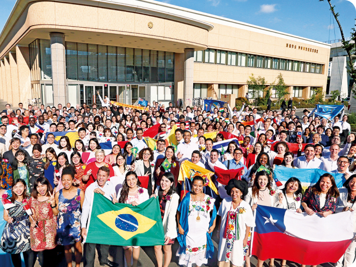
創價的和平運動起源於1930年代。在戰爭動盪與軍國主義氛圍下，初代會長 牧口常三郎 與第二代會長 戶田城聖 以「民眾幸福」為核心，創立創價學會，致力於推廣尊重生命的思想。
秉持「人飢己飢、人溺己溺」的精神，創價積極投入社會關懷行動，關懷弱勢族群，並在國內外重大災害發生時迅速投入援助，為受災者帶來支持與希望。
culture
文化是人性的表現，所以創造卓越的文化， 首先要耕耘人的精神和生命， 培養豐饒的人性土壤，此即宗教的使命。
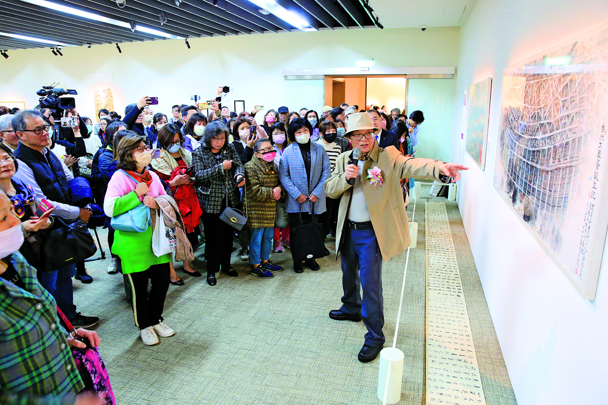
為提升社會的文化氣息，創價自2003年起，以「文化尋根 建構台灣美術百年史」為策展主題，在全台巡迴展出本土藝術家的作品，並從2012年起推動「行動美術館」，將優質展覽帶進校園。
「藝術絕不是部分特權階級的專利品。要使音樂這人類共同的財寶普及於民眾─這就是我創辦民音的出發點。」
匯聚國內外重量級美術館資源，策劃浮世繪、跨文化藝術與經典典藏等多元展覽。
透過音樂、舞蹈與表演藝術，培育青年人才並推動文化教育發展。
education
所謂「智慧的人」，就是無論在何種環境， 皆能在自己所處的地方， 闊達地創造美、利、善價值的人， 去磨鍊、培養這種智慧， 即是「創價教育」的意義。
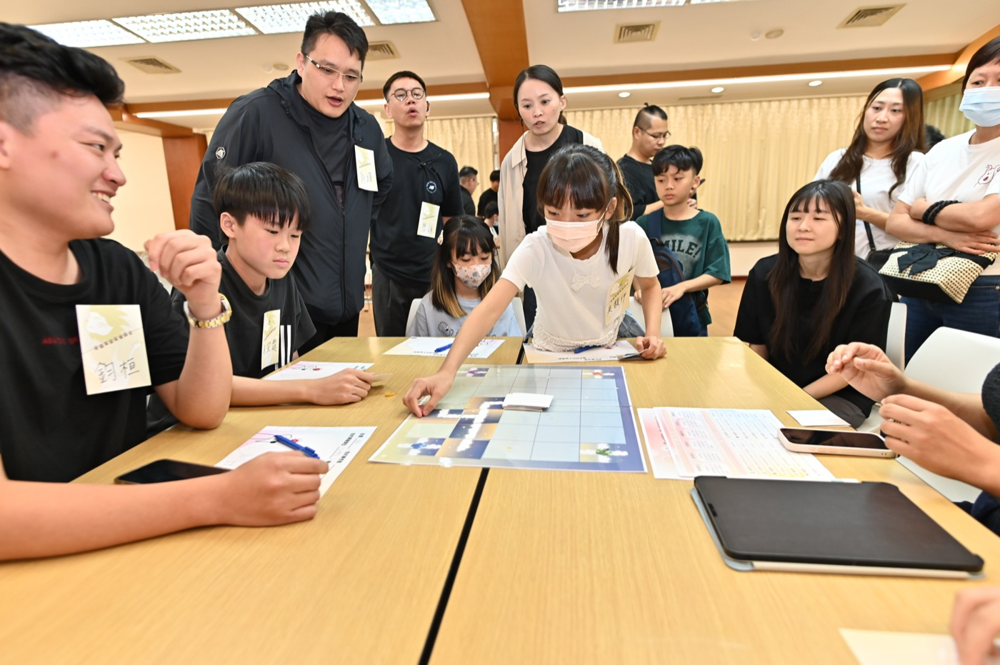
透過多元營隊與研修活動，培育從孩童到大學生的未來人才。
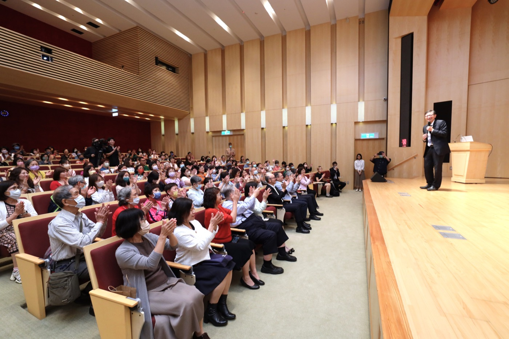
教育是人類進步的關鍵！為建構民眾普賢的社會，創價在各地舉辦醫學、心理、教育、文學、法律、消防安全等各類講座，引導會員更有智慧地面對挑戰。
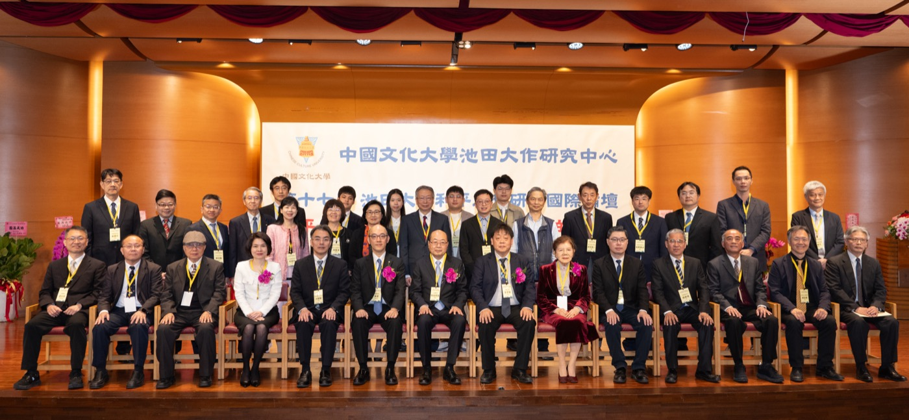
為讓整個社會為「教育」事業傾注更多心力，並作為學術機構與民眾之間的教育平台，創價除舉辦或參與學術研討會之外，並在池田先生支持下，將各類教育叢書及對談集致贈給各級學校及各縣市鄉鎮圖書館，以帶動莘莘學子閱讀優良讀物的風氣。
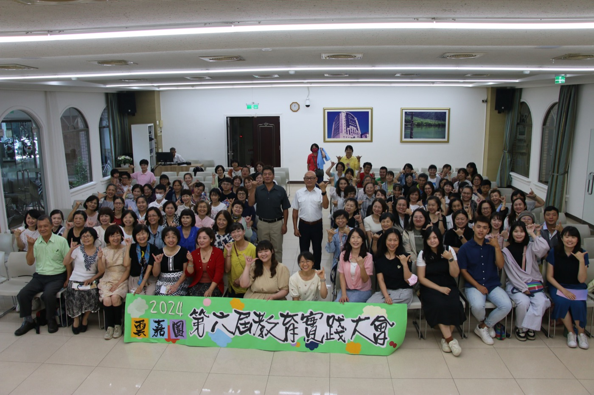
匯聚教育工作者與青年幹部，共同推動以孩童幸福為核心的教育理念。
peace
「和平」不在遙遠的地方，而是在自己所在之處， 在與這位朋友見面、與那位朋友結緣當中， 在不斷的誠實對話之中！
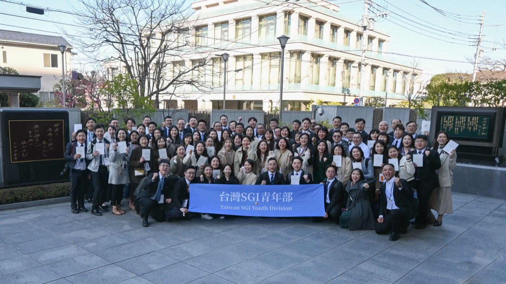
秉持牧口初代會長所說：「要將21世紀建設為『人道競爭』的世紀」，創價於1990年「法人化」之後，積極與SGI會員國進行國際交流。
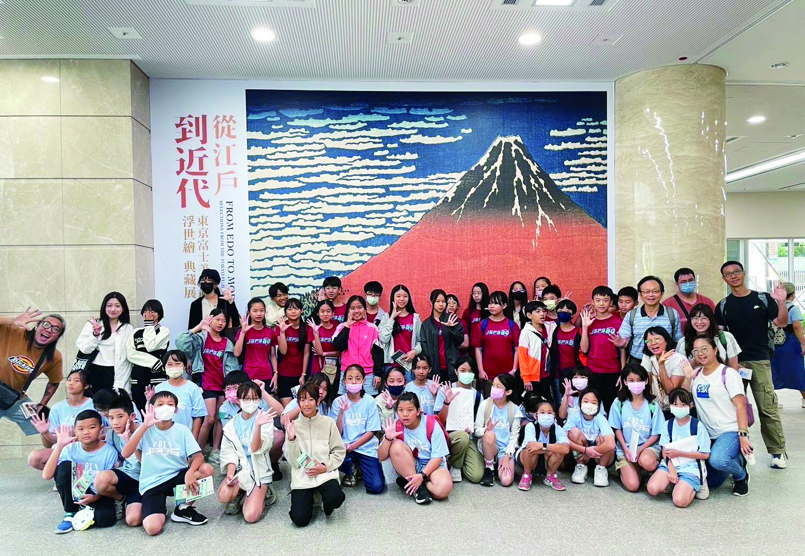
為喚醒大家重視攸關人類存亡的環境惡化、衝突及貧窮等全球性危機，創價自2004年起，陸續引進多項國際性展覽來台
Social contribution
創價懷抱「人飢己飢、人溺己溺」精神，積極展開社會關懷行動，不僅為弱勢族群送去溫暖，每當國內外有重大災難發生時，更在第一時間前往協助，為災民送去希望光輝。
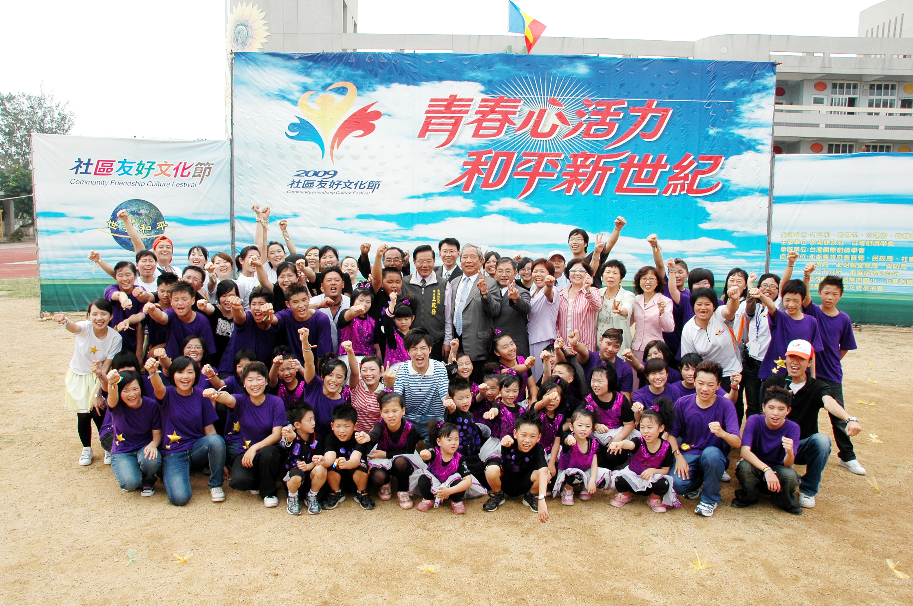
在世界經濟不景氣，人心喪失希望之際，社區友好文化節正是一項鼓舞人心、帶給社區莫大勇氣與喜悅的重要活動。
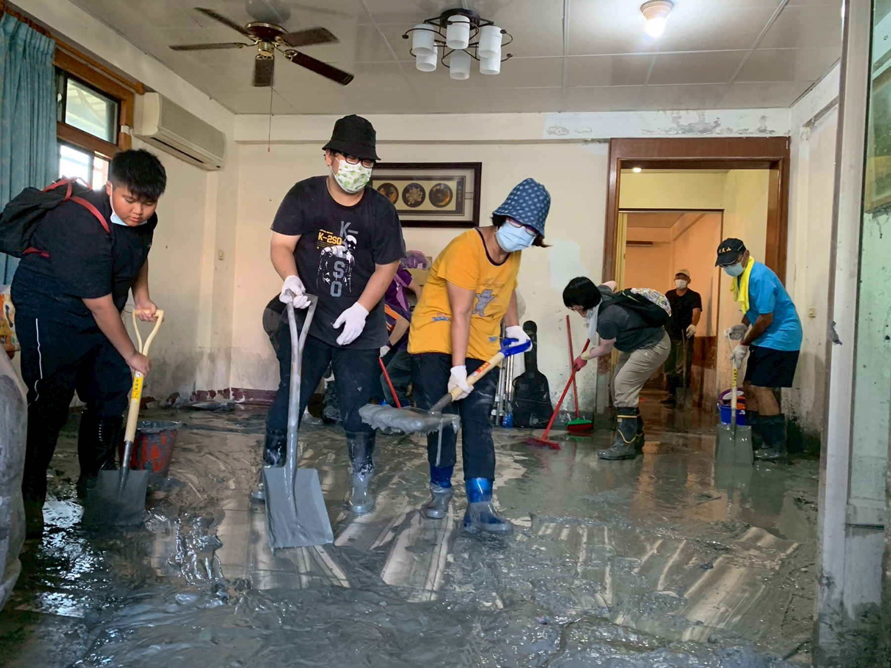
創價長期以來致力於社會公益事業，本著「人飢己飢、人溺己溺」的人道關懷精神，不僅持續投入資源推動偏鄉教育、促進文化平權，每逢國內重大災害，更積極協助政府投入救災行列。
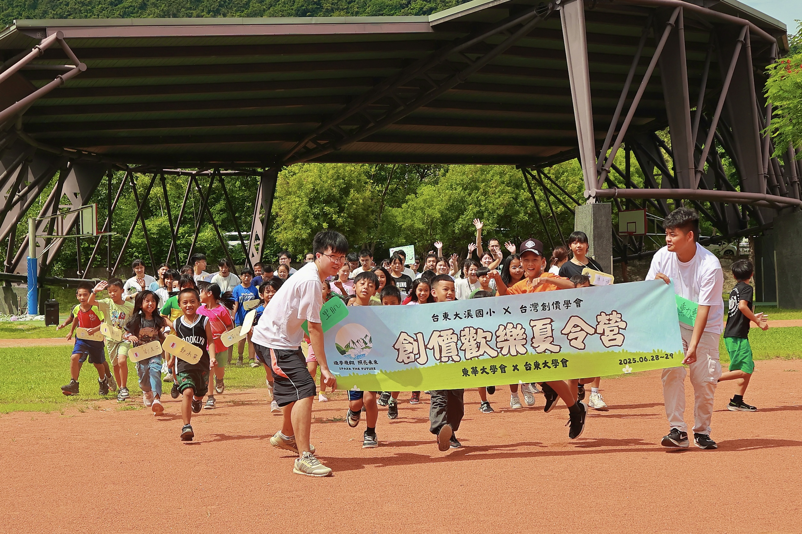
自921震災後展開服務行動，持續關懷災區、偏鄉與弱勢孩童。
透過音樂與表演走入社會，關懷長者、兒童及弱勢族群，並於災後舉辦音樂會，撫慰人心、凝聚力量，陪伴社會走向復原。